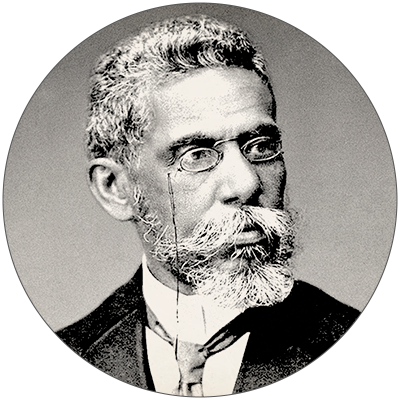

Machado de Assis

Machado de Assis (1839-1908) é um dos maiores representantes da literatura brasileira. O grande escritor foi o responsável por inaugurar o Realismo, que teve como marco inicial a obra "Memórias Póstumas de Brás Cubas", publicada em 1881. Machado deixou um conjunto vasto de obras. Foi contista, cronista, jornalista, poeta e teatrólogo, além do que é o fundador da cadeira n.º 23 da Academia Brasileira de Letras.